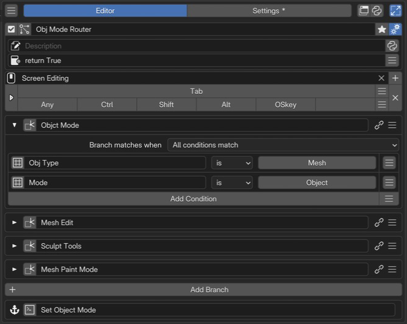

Context Router Editor¶
Blender’s operations depend on the current mode, object type, and other context. Context Router lets you edit the relationship between that context and the menu or action to call as a set of conditional branches.
For example, the same key can open Mesh Edit while editing a mesh and Sculpt Tools while sculpting. Branches are checked from top to bottom, and the first matching target is selected.
Added in version 2.1: Added Context Router for building conditional branches in the editor.
Configuration guide — conditions and targets (for AI)
Name: Context Router / Type ID: ROUTER. Checks conditional branches from top to bottom and selects the first matching branch’s target. It does not run multiple branches in sequence.
Inputs: branch name, conditions, condition combination, and target. An ordinary branch with no conditions does not match unconditionally. Use Otherwise for fallback behavior.
Input limits: up to 256 ordinary branches and 256 conditions per branch. Target Custom code has a dedicated field allowing 32,768 characters, separate from the ordinary Custom slot’s 1,024 UTF-8 byte limit.
Targets: Command / Menu / Hotkey / Custom. There is no Property tab. To display existing properties, consider referencing a menu containing Property slots.
Menu targets: Pie Menu, Regular Menu, Popup Dialog, Floating Panel, Stack Key, Sticky Key, Macro Operator, Modal Operator, and Vector Menu. Other Context Routers, Properties, and Property Stacks are distinct from these target choices. Property / Property Stack can be condition sources.
Uses: open mode-specific menus from one hotkey, or embed the Router in a Pie Menu or Popup Dialog to vary the displayed content by condition.
Logic beyond paths and comparisons: calculate a Boolean, number, Enum, or other value in a PME Property Getter. Reference and compare it through the condition slot’s Menu tab (storage: Addon Preferences). If no branching is needed, use the PME Property directly for display and interaction. See choosing an approach.
Design choice: distinguish Custom for drawing from Command for execution. Check targets and expansion options rather than assuming identical drawing and execution in every host menu.
See branches for priority, Otherwise for fallback behavior, and switching property paths for an example workflow.
Interface and editing workflow¶

1Name and basic controlsCheck the name and enabled state of the whole Router. 2Advanced settingsSet the description and availability conditions for the whole Router. 3Keymap / HotkeyChoose where and with which key to invoke context-based routing. 4Branches and conditionsThe first branch is expanded, showing its Mesh object and Object Mode conditions and its target. 5OtherwiseChoose what happens when no branch matches.Set conditions and a target menu for each branch, then use Otherwise to define what happens when none match.
Name and basic controls¶
Set the enabled state and name. This names the entire Router, separately from its individual branches. See selected menu settings for the controls.
Advanced settings¶
Description describes this Router; Poll determines whether the entire Router is available. These are separate from individual branch conditions. See the shared Description / Poll settings.
Keymap / Hotkey¶
Keymap selects where to use the Router; Hotkey sets the key and modifiers. The same key can open different menus according to conditions. See the shared Hotkey settings.
Branches and conditions¶
A branch pairs conditions with a target. Add one with Add Branch and expand its conditions using the triangle on the left. Set the target slot to the menu or action to call when its conditions match.
Top to bottom: the first match wins¶
%%{init: {"flowchart": {"nodeSpacing": 18, "rankSpacing": 22, "padding": 10}, "themeVariables": {"fontSize": "14px"}}}%%
flowchart TB
accTitle: Context Router branch order
accDescr: Check branches from top to bottom. The first match calls its target and ends branch selection. If all fail to match, select Otherwise.
subgraph B1["Branch 1"]
direction LR
C1["Mesh + Object Mode"] -->|Match| T1["Open Object Mode"]
end
subgraph B2["Branch 2"]
direction LR
C2["Mesh + Edit Mode"] -->|Match| T2["Open Mesh Edit"]
end
subgraph B3["Branch 3"]
direction LR
C3["Sculpt Mode"] -->|Match| T3["Open Sculpt Tools"]
end
B1 -->|No match| B2
B2 -->|No match| B3
B3 -->|No match| O["Otherwise: Set Object Mode"]
classDef condition fill:#e8f1fb,stroke:#4878aa,color:#172b43;
classDef target fill:#e8f5ed,stroke:#45805d,color:#183f28;
classDef fallback fill:#fff2df,stroke:#b77c28,color:#513512;
class C1,C2,C3 condition;
class T1,T2,T3 target;
class O fallback;
style B1 fill:transparent,stroke:#8495a5
style B2 fill:transparent,stroke:#8495a5
style B3 fill:transparent,stroke:#8495a5
Conditions are checked from the top. The first match determines the target; Otherwise is used if none match. Place specific conditions before broader ones to keep priority clear.
A–B. Target and link¶
Use the icon in A: target slot to configure Command / Menu / Hotkey / Custom. The adjacent name field is the branch’s display name. Renaming it does not change the referenced menu.
B: link button opens the referenced Menu target for editing. Use the menu at the right end of the row to reorder or remove branches.
C. Combining conditions¶
Branch matches when selects how conditions within a branch are combined.
Setting |
Match rule |
|---|---|
All conditions match |
Every evaluated condition must match. For example: a Mesh object and Object Mode. |
Any condition matches |
At least one evaluated condition must match. For example: Object Mode or Edit Mode. |
Use Add Condition to add a condition. The pictured branch uses All, so both Obj Type and Mode must match.
Condition evaluation
Only enabled, fully configured conditions are evaluated. A branch with no evaluable conditions does not match.
Branch selection ends as soon as a target is selected. An unset, missing, or unavailable target does not cause evaluation to continue to the next branch or Otherwise.
D. Condition presets¶
The menu at the right of Add Condition adds common conditions. For example, choose an object type under Active Object Type, or a mode under Context Mode, to add a condition with its source and comparison value already configured.
Use presets as a starting point and combine the conditions you need. The pictured “Mesh and Object Mode” configuration uses separate type and mode conditions.
E. Property path and slot name¶
Edit the condition slot through its left-hand icon and specify the property path to read. The adjacent name field labels the condition; changing it does not change the source. Obj Type and Mode in the image are example labels.
C is the context supplied by PME. The source is resolved from the context at the time the Router is evaluated.
Active data:
C.active_object.typereads the current active object’s type;C.modereads the current mode. These do not retain the object or mode present when you configured the condition.Editor-dependent values: the type and available properties of
C.space_datavary by editor. Specifying a type helps interpret the path; it does not switch the execution editor. Check that the path can be read in the editor where the Router will be used.Read-only values: a readable property can be used as a condition even if it cannot be written. Setting a comparison value does not change the source property.
Unavailable sources: a condition does not match if its target is absent, an intermediate path cannot be resolved, or a type does not match. Also check the case with no active object.
Values and conditions that need more than a property path
Use a regular PME Property when you need to aggregate data, calculate a value, or perform logic that a property path alone cannot express. Write Python in its Getter and return a single Boolean, number, Enum, or other supported value.
To display or operate on one value: use the PME Property directly. Reference it from another menu’s Menu tab to place its widget. Configure its Setter if writing requires custom logic.
To combine it with branches or other conditions: reference the PME Property from the condition slot’s Menu tab, then compare the returned value. Context Router uses the result to select a target; Property Stack uses it to evaluate its Getter state.
Set the linked PME Property’s storage to Addon Preferences. Read-only properties with only a Getter also work as conditions. Choose the return type and the value to return when no target exists. See Property Editor: Getter / Setter for configuration.
F. Comparison operator and value¶
Set the comparison operator and comparison value on the right. The available operators and controls depend on the source property’s type. The pictured is Mesh tests equality for a single-select Enum.
Property type |
Operators |
Comparison value and meaning |
|---|---|---|
Boolean |
|
Choose True or False. |
Int / Float |
|
Test equality, inequality, or ordering against a number. |
String |
|
Test equality, inequality, substring inclusion, or a prefix. |
Enum (single-select) |
|
|
Enum (multi-select) |
|
Test whether the current selection and specified choices share at least one item, or no items. |
Comparison details
Multi-select Enum
indoes not require every specified item to be selected. One shared item is sufficient. Enum comparisons use identifiers; the UI lets you select their corresponding display names.Float
isis not an approximate comparison. To allow a range, combine lower and upper bounds with All conditions match.Unavailable values do not become matches through
is False,is not, ornot in. A value being False or different from the comparison value is distinct from being unable to read it.
Otherwise — fallback behavior¶
Set the target to use when no ordinary branch matches. It might report that the context is unsupported or open a default menu. Leaving the target unset does not guarantee that an action will run.
Working with different properties in different editors¶
Use this for settings such as proportional editing, where the property path varies by editor or mode even though its purpose is similar.
Check the actual RNA path for each editor and mode.
Prepare menus for those paths and assign them to the Router’s conditions and targets.
Define Otherwise for missing targets or unsupported editors.
Check each branch’s display and actions in the context where its conditions match.
Avoid treating every non-Object Mode context as Mesh Edit Mode. Check the case with no active object separately.